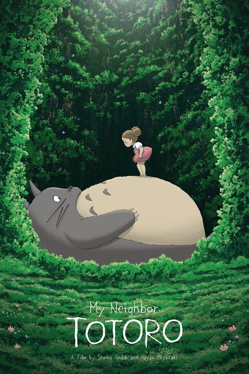
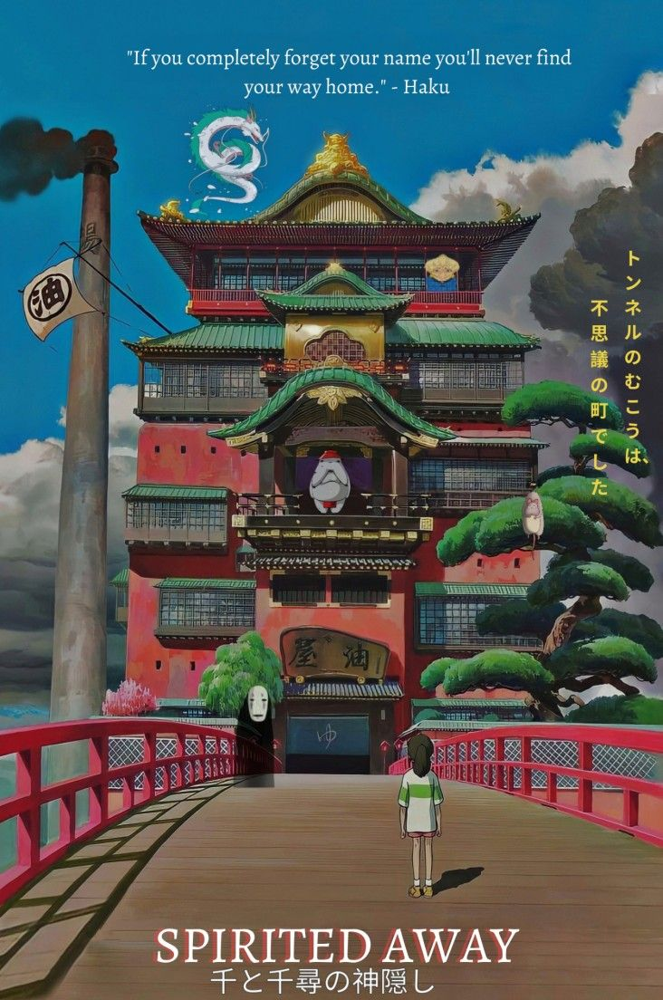
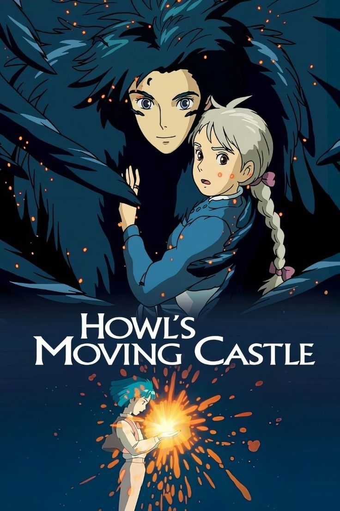
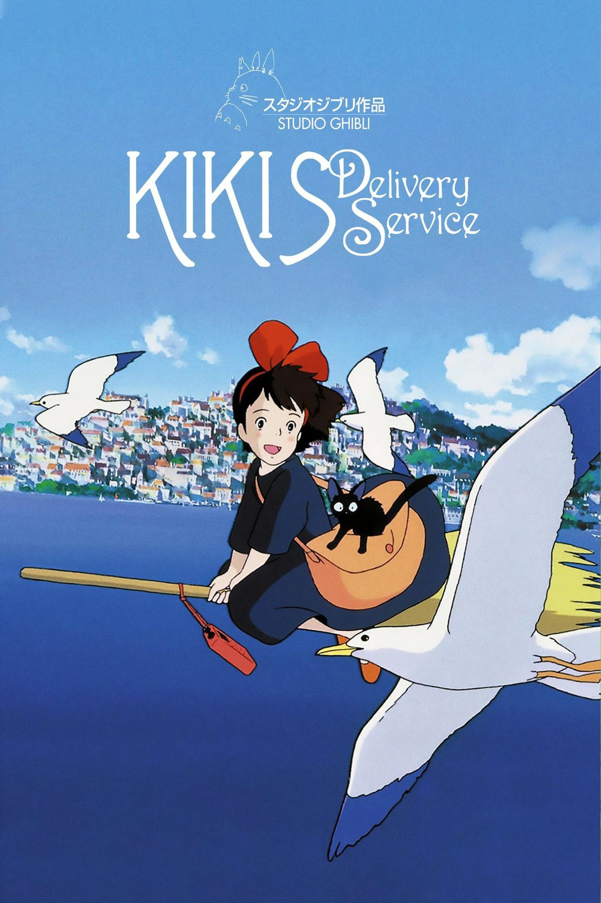

Conozcamos las peliculas

Esta entrañable película cuenta la historia de Satsuki y Mei, dos hermanas que se mudan al campo junto a su padre para estar más cerca del hospital donde se encuentra internada su madre. Mientras exploran su nuevo hogar y los bosques cercanos, descubren criaturas mágicas y conocen a Totoro, un espíritu gigante y amigable que vive oculto entre la naturaleza. La película transmite una sensación de calma, inocencia y asombro, mostrando la importancia de la familia, la imaginación y la conexión con el entorno natural. Con el paso de los años, Totoro se convirtió en el símbolo más representativo de Studio Ghibli.

Considerada una de las mejores películas animadas de todos los tiempos, narra la historia de Chihiro, una niña de diez años que accidentalmente entra en un misterioso mundo espiritual junto a sus padres. Después de que ellos son convertidos en cerdos, Chihiro debe trabajar en una enorme casa de baños para espíritus mientras intenta encontrar la forma de salvarlos y regresar a casa. Durante su aventura conoce personajes inolvidables como Haku, Sin Rostro y Yubaba. La película aborda temas como la madurez, la identidad, la valentía y el crecimiento personal, todo acompañado de una animación espectacular y una atmósfera mágica que hizo de esta obra una de las más importantes de Studio Ghibli.

La historia sigue a Sophie, una joven trabajadora que lleva una vida tranquila hasta que una bruja la maldice y la transforma en una anciana. Buscando romper el hechizo, termina viviendo en el misterioso castillo ambulante del mago Howl, un lugar mágico impulsado por el demonio de fuego Calcifer. A medida que Sophie conoce más sobre Howl y su pasado, ambos comienzan a cambiar emocionalmente y a enfrentar los conflictos que rodean al mundo, especialmente la guerra. La película combina romance, fantasía y aventura con un diseño visual increíblemente creativo, convirtiéndose en una de las obras más queridas del estudio.

Ambientada en un Japón antiguo lleno de espíritus y dioses del bosque, esta película sigue la historia de Ashitaka, un joven príncipe que es afectado por una maldición mortal mientras intenta defender a su pueblo. En busca de una cura, se ve involucrado en un conflicto entre los humanos que explotan los recursos naturales y los espíritus del bosque que intentan proteger su hogar. Allí conoce a San, conocida como la Princesa Mononoke, una joven criada por lobos que lucha contra los humanos. La película presenta un mensaje profundo sobre la naturaleza, la ambición humana, la guerra y la necesidad de encontrar equilibrio entre el progreso y el medio ambiente.

Kiki es una joven bruja de trece años que, siguiendo la tradición de su familia, debe mudarse sola a una nueva ciudad para aprender a ser independiente. Acompañada únicamente por su gato Jiji, comienza un pequeño servicio de entregas utilizando su escoba voladora. Mientras intenta adaptarse a la ciudad y encontrar su lugar en el mundo, Kiki enfrenta inseguridades, cansancio y dudas sobre sí misma. La película muestra de forma muy humana el crecimiento personal, la importancia de la confianza y el proceso de madurar. Gracias a su atmósfera acogedora y sus personajes entrañables, se convirtió en una de las historias más queridas del estudio.

Esta colorida y emotiva película cuenta la historia de Ponyo, una pequeña pez mágica que sueña con convertirse en humana después de conocer a Sosuke, un niño que vive junto al mar. A medida que Ponyo se acerca al mundo humano, ocurren fenómenos mágicos que alteran el equilibrio de la naturaleza y provocan enormes tormentas. Inspirada libremente en “La sirenita”, la película transmite mensajes sobre la amistad, el amor, la inocencia y el respeto por el océano. Su estilo visual lleno de colores vivos y movimiento constante la convierte en una de las películas más encantadoras y alegres de Studio Ghibli.